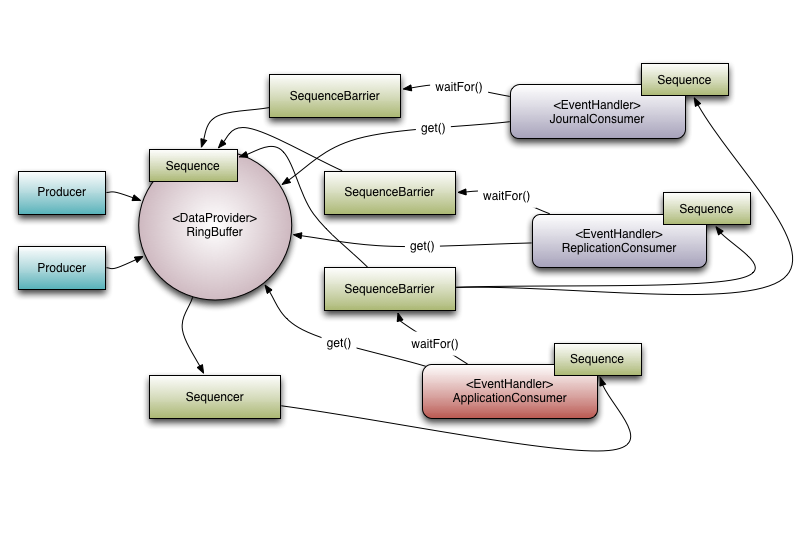
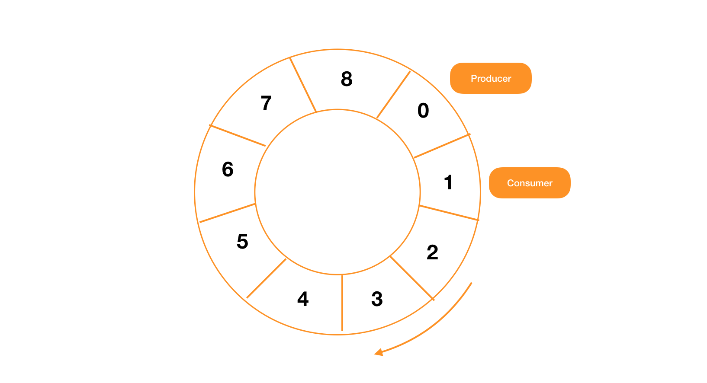

Disruptor为何这么快
Disruptor 是一个开源并且高效的生产者-消费者框架，很难直接解释这个框架是做什么的，但是可以把这个框架理解成 Java 中的 BlockingQueue。这样理解起来是不是轻松多了，这就是一个生产者-消费者队列，只不过它的性能要比 BloockingQueue 好很多，号称单机器可以有百万的 TPS。
Disruptor 的特点
Disruptor 有以下主要三个特点：
- 事件多播
- 为事件提前分配内存
- 无锁操作
一般我们在使用队列的时候，队列中的消息只会被一个消费者使用，但是在 Disruptor 中，同一个消息可以被多个消费者同时处理，多个消费者之间是并行的。
因为可能在同一时间，一份数据要在多个地方被用到，比如一个请求数据需要同时被存入日志、备份到远程机器、进行业务处理，如下图所示：

如果是一条消息只能被一个消费者处理，那么上面说的三个处理逻辑就得线性的完成或者放到一个消费者中再异步进行处理。如果可以把这些操作拆成多个消费者来并行消费同一条消息，处理效率就会提高很多。
这样要确保一条消息在都被所有消费者处理之后才能开始处理下一条，不能出现消费者在同时处理不同的消息，所以需要类似 Java 中 CyclicBarrier 一样的工具来保证所有消费者能够同时处理下一个消息，Disruptor 中实现了 SequenceBarrier 来完成这个功能。
Disruptor 目标是应用于低延迟的环境中。在低延迟的系统中需要减少或者完全不进行内存分配，在 Java 中，就是要减少垃圾回收所带来的停顿时间。在 Disruptor 中，使用 RingBuffer 来达成这个目标，在 RingBuffer 中提前创建好对象，后续通过反复利用这些对象来避免垃圾回收，这个实现是线程安全的。
在 Disruptor 中，实现线程安全基本不使用锁，而是使用 CAS 等无锁机制来保证线程安全。
核心概念
在正式了解 Disruptor 之前，我们需要了解一些核心的概念，Disruptor 的代码并不复杂，基本是围绕这些核心概念来展开的。
- Producer: 数据的生产者，生产者本身与 Disruptor 无关，可以是任何生产数据的代码，甚至可以是一个 for 循环
- Event: Producer 产生的数据，用户可以根据自己的需要自行进行定义
- RingBuffer: 用来存储 Event 的数据结构，提前分配好内存，避免在程序运行的过程中创建对象
- EventHandler: 消费者，由用户自己实现
- Sequence: 用来标识 Disruptor 中的组件，多个组件之间的协同依靠它来实现
- Sequencer: Disruptor 中的核心机制，实现了核心的并发算法，保证消息在生产者和消费之间正确的进行传递
- SequenceBarrier: 用来保证所有的消费这能够同时处理新的消息
- WaitStrategy: 消费者等待策略
- EventProcessor: 将消息传递到消费者的具体实现
上面的这些组件组成了 Disruptor，整个框架的代码量其实很少，应该不到 7000 行，而且代码很干净。代码基本没有使用继承，而是使用了面向接口编程以及组合，所以代码之间的耦合度很低。
RingBuffer 和 Sequencer 是其中最重要的两个组件，前者用于存储消息，后者控制消息有序的生产和消费。
性能提升策略
Disruptor 的核心目标就是提升消息的吞吐量，所以框架也是围绕这些目标来实现的，主要做了如下的事情：
- 减少垃圾回收
- 让消息可以通过被多个消费者并行处理
- 使用无锁算法来实现并发
- 缓存行填充
RingBuffer 是用来存储消息的容器，内部实现使用了一个数组：
private final Object[] entries;
在 Disruptor 启动之前，需要指定数据的大小以及，初始化这个数组：
private void fill(EventFactory<E> eventFactory)
{
for (int i = 0; i < bufferSize; i++)
{
entries[BUFFER_PAD + i] = eventFactory.newInstance();
}
}
数组在初始化之后就不再回收了，所有的消息会循环利用这些已经创建好的对象，所以这是一个循环数组，RingBuffer 的实现如下图所示：

那么在对循环数组进行操作的时候，需要对生产者和消费者对数组的访问进行控制。一方面，因为 Disruptor 支持多个生产者和多个消费者，所以要保证线程安全，为了保证性能，并没有使用锁来保证线程安全（只有 BlockingWaitStrategy 使用了锁），在对 RingBuffer 的访问控制中，主要使用 CAS 来完成:
protected final E elementAt(long sequence)
{
return (E) UNSAFE.getObject(entries, REF_ARRAY_BASE + ((sequence & indexMask) << REF_ELEMENT_SHIFT));
}
另一方面对于生产者和消费者的速度进行访问，生产者不能对未消费的消息进行写入，这样会造成消息的丢失，在 RingBuffer 中，没有使用 head 和 tail 指针进行控制，而是通过 Sequence 来进行控制，生产者写入数据的时候，会通过当前的序列号加上需要写入的数据量，与消费者的位置进行对比，看看是否有足够的空间进行写入。
在 RingBuffer 中，有这样一段代码：
abstract class RingBufferPad
{
protected long p1, p2, p3, p4, p5, p6, p7;
}
这段代码就称之为缓存行填充，说到这个就需要了解 CPU 的缓存机制，因为内存的访问速度与 CPU 的速度相差太远，所以在 CPU 和内存之间还加上了 CPU 缓存，现在一般会加上 3 级，第一级和第二级是 CPU 核独享的，第三级缓存则是多个核之间共享。
在很多情况下，我们想把一些不会变化的值缓存到 CPU 缓存中，比如 Java 中的 final 变量，这样就可以最大化的利用 CPU 缓存的速度，但是 CPU 缓存有一个特点，缓存数据的时候会以 CPU 缓存行为单位，所以如果一个 final 变量的附近定义了会变化的变量，每次变量变化的时候，数据就会重新被写回到内存中，那么 final 变量同样也不会再缓存在 CPU 缓存中了，所以在缓存行的前后部分都需要填充，确保不会缓存到其他的数据：
abstract class RingBufferPad
{
// 填充缓存行的前部分
protected long p1, p2, p3, p4, p5, p6, p7;
}
abstract class RingBufferFields extends RingBufferPad{
......
// 下面需要被缓存到 CPU 缓存的数据
private final long indexMask;
private final Object[] entries;
protected final int bufferSize;
protected final Sequencer sequencer;
......
}
public final class RingBuffer extends RingBufferFields implements Cursored, EventSequencer, EventSink{
......
// 填充缓存行的后部分
protected long p1, p2, p3, p4, p5, p6, p7;
......
}
这样 RingBufferFields 的数据被加载到 CPU 缓存中之后，就不会再需要从内存中读取了。
Disruptor 通过各方面的措施来提升性能，这就是为什么这么快的原因。